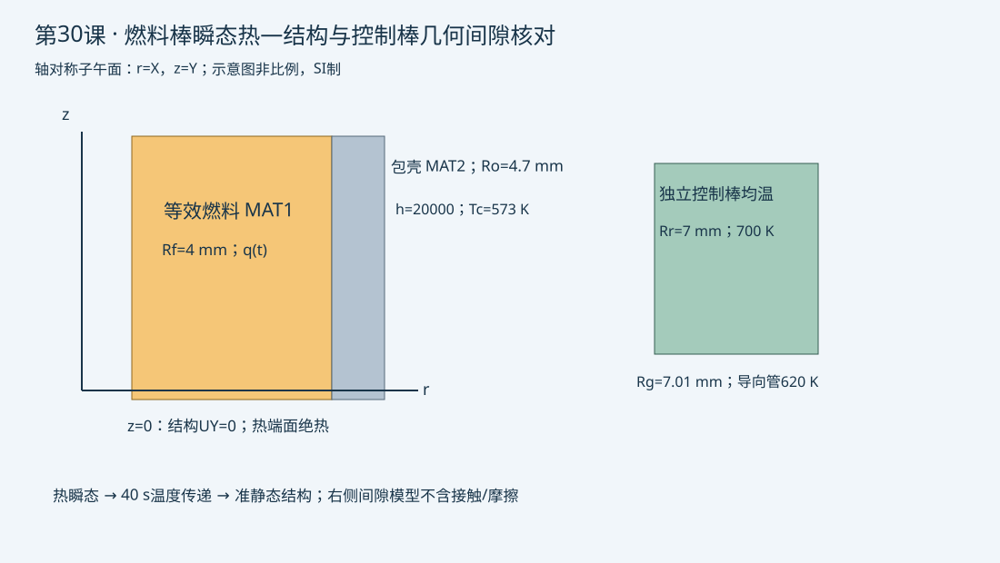

验证状态：已通过 MAPDL 求解
隔离MAPDL正常、网格减半、时间步减半均完成。40 s中心753.025 K，稳态参考752.889 K，平台热平衡误差0.076%；网格位移变化0.024%、平均应力变化0.365%。控制棒自由膨胀与解析一致，几何间隙2.6267 μm。有限教学假设下验证，不等于安全评价。

2026-10-12；2026-10-13按用户请求补做。
今日目标
完成热瞬态、相同网格温度传递、包壳热变形及一个独立控制棒几何间隙估算，分清温度、位移和卡涩可靠性之间的证据距离。
物理问题与边界
燃料半径4 mm，包壳外半径4.7 mm，棒段40 mm；全轴对称，端面绝热，外壁冷却剂573 K、h=20000 W/(m² K)。0–10 s线性升功率，10–40 s恒功率，40–60 s线性降至零。燃料和包壳共节点，忽略真实间隙、接触开闭、辐照、塑性与温度相关物性；这些假设会显著影响真实应力。
结构在热时间40 s做一次准静态求解，底端仅约束轴向位移、轴线约束径向位移。单向传递不包含位移对热场或中子场的反馈。控制棒另建均温模型，700 K棒温和620 K导向管温度是给定假设，绝非前一燃料棒模型的计算输出。径向冷态间隙10 μm。
关键命令
PLANE55/KEYOPT：轴对称热单元，Y轴为旋转轴，热流是完整360°量。AATT/CM：保留两材料区域；只给FUEL元素施加生热。IC/ANTYPE,TRANS：初温与瞬态积分分别设置。KBC/DELTIM：分段线性生热、明确最大时间步。SET：在热结果中读40 s，不能把最后60 s误当40 s。ETCHG,TTS：同网格热单元转结构单元，转换后重新核对轴对称选项。LDREAD,TEMP,,,40,0：从fuel30_th.rth指定物理时间读取节点温度为BF载荷。TREF/BF：热膨胀以573 K为参考，温度载荷不是机械约束。*GET/*VWRITE：导出实际温度、外壁位移、平均应力和几何间隙。
预期结果与独立参考
恒功率足够长时中心温度趋近两层圆柱导热解析值：Tc+qRf²/(2hRo)+qRf² ln(Ro/Rf)/(2kc)+qRf²/(4kf)。这仅是稳态参考，不能用于声称早期瞬态精确。平台末可比较总生热和外壁散热，早期两者差额进入热储存。
均温控制棒应满足Δr=αΔT r。热态几何间隙为Rg+ΔRg−Rr−ΔRr；若为负只说明自由膨胀模型预计发生干涉，需要另建接触、摩擦、弯曲和插入动力学模型。正间隙也不能证明不会卡涩。
验证清单
- 检查燃料与包壳材料归属、包壳无生热、573 K初值与温度传递来源。
- 比较40 s中心温升与稳态参考、平台末热平衡；保留早期热储存解释。
- 最大时间步0.5→0.25 s，网格0.2→0.1 mm分别比较温升和包壳位移，节点平均应力不能代替局部峰值收敛。
- 控制棒位移对照均温解析自由膨胀；导向管解析值使用独立温度与半径。
常见错误
- 以同一文件名前缀覆盖热rth，导致LDREAD读错：热与结构分别命名。
- 把共享节点粘结当真实燃料—包壳间隙：明确此例只验证求解链。
- 把间隙正负直接当控制棒插入安全结论：补充公差、偏心、磨损、弯曲、摩擦和驱动力证据。
练习
将升功率时间10 s改为2 s，并比较温升和时间步敏感性。再将控制棒均温升至900 K，观察自由膨胀预测是否干涉；随后设计接触模型，不能继续把自由膨胀负间隙当实际穿透。
完整脚本
```apdl
/CLEAR,NOSTART ! 新的隔离工作目录；SI制m、s、W、K、Pa
/FILNAME,fuel30_th ! 热结果写入独立rth文件
/PREP7 ! 两材料轴对称燃料棒截面
ET,1,PLANE55 ! 四节点二维热单元
KEYOPT,1,3,1 ! X为径向r，Y为轴向z，完整360度模型
rf=0.004 ! 燃料半径4 mm
ro=0.0047 ! 包壳外半径4.7 mm；本例零间隙共节点
alen=0.04 ! 教学棒段长度40 mm
qmax=1.2E8 ! 燃料最大体积生热W/m3
hcoef=20000 ! 外表面对流W/(m2 K)
tbulk=573 ! 冷却剂和无应变参考温度K
dtmax=0.5 ! 最大时间步s；验证时减半
MP,KXX,1,3 ! 等效燃料常导热率W/(m K)，非实测材料数据库
MP,DENS,1,10970 ! 等效燃料密度kg/m3
MP,C,1,330 ! 等效燃料比热J/(kg K)
MP,KXX,2,16 ! 等效包壳常导热率W/(m K)
MP,DENS,2,6500 ! 包壳密度kg/m3
MP,C,2,330 ! 包壳比热J/(kg K)
RECTNG,0,rf,0,alen ! 燃料子午面
AATT,1,,1 ! 第一材料及热单元属性
RECTNG,rf,ro,0,alen ! 包壳子午面
ASEL,S,AREA,,2 ! 只选择包壳面积
AATT,2,,1 ! 包壳材料，不给包壳生热
ALLSEL,ALL ! 网格前恢复全部面积
AGLUE,ALL ! 共界面，完全接触导热和粘结是教学假设
ASEL,S,LOC,X,0,rf ! 布尔操作后按面积质心重新选择燃料
AATT,1,,1 ! 重新赋燃料材料，避免AGLUE后属性丢失
ASEL,S,LOC,X,rf,ro ! 只选择包壳面积质心
AATT,2,,1 ! 重新赋包壳材料
ALLSEL,ALL ! 网格前恢复完整面积集
MSHKEY,1 ! 映射四边形网格
MSHAPE,0,2D ! 二维四边形
ESIZE,0.0002 ! 名义网格0.2 mm，包壳有多层单元
AMESH,ALL ! 两材料一起剖分
ALLSEL,ALL ! 恢复全部节点与单元
ESEL,S,MAT,,1 ! 选中燃料材料
CM,FUEL,ELEM ! 保存燃料元素集
BFE,ALL,HGEN,,0 ! 初始零生热
ALLSEL,ALL ! 外壁边界前恢复选择
NSEL,S,LOC,X,ro ! 包壳外壁，不选燃料界面
SF,ALL,CONV,hcoef,tbulk ! 外壁对流；两端自然绝热
ALLSEL,ALL ! 瞬态初始条件覆盖全部节点
IC,ALL,TEMP,tbulk ! 全域初温573 K
FINISH ! 离开前处理
/SOLU ! 热瞬态分析
ANTYPE,TRANS ! 热场时间演化；后续结构仅准静态
TRNOPT,FULL ! 全瞬态热解
AUTOTS,ON ! 自动子步，在明确上下限内调整
DELTIM,dtmax,0.05,dtmax ! 初始、最小和最大步长s
KBC,0 ! 当前生热由前一步值线性变化
OUTRES,ALL,ALL ! 保存每个热子步，支持按时间读温度
CMSEL,S,FUEL ! 生热只属于燃料
BFE,ALL,HGEN,,qmax ! 0到10 s线性升至最大功率
ALLSEL,ALL ! 求解选择完整模型
TIME,10 ! 第一段终止时刻s
SOLVE ! 实际热瞬态求解
TIME,40 ! 恒功率保持至40 s
SOLVE ! 不改变热源，继续时间积分
CMSEL,S,FUEL ! 只修改燃料生热
BFE,ALL,HGEN,,0 ! 40到60 s线性降至零
ALLSEL,ALL ! 恢复完整选择
TIME,60 ! 第三段终止时刻s
SOLVE ! 继续冷却瞬态
FINISH ! 热场结束
/POST1 ! 核对平台末温度和热平衡
SET,,,,,40 ! TIME为第5个参数，按热时间40 s读结果
nc=NODE(0,alen/2,0) ! 轴线中点节点
nout=NODE(ro,alen/2,0) ! 外壁中点节点，不使用预定义NO标签
*GET,tc,NODE,nc,TEMP ! 中心温度K
*GET,to,NODE,nout,TEMP ! 外表面温度K
tex=tbulk+qmax*rf**2/(2*hcoef*ro) ! 稳态冷却剂与对流温差
tex=tex+qmax*rf**2*LOG(ro/rf)/(2*16) ! 加上包壳径向导热温差
tex=tex+qmax*rf**2/(4*3) ! 加上燃料导热温差；不是瞬态解析解
bal=ABS(2*ro*hcoef*(to-tbulk)-qmax*rf**2)/(qmax*rf**2) ! 平台末准稳态热平衡误差，早期不适用
*CFOPEN,thermal_check,csv ! 记录实际温度与参考
*VWRITE,tc,to,tex,bal ! 下一行四列纯格式
(E18.11,3(',',E18.11))
*CFCLOS ! 关闭热核对文件
FINISH ! 开始载荷传递前退出后处理
/PREP7 ! 相同节点网格转换结构单元
DDELE,ALL,TEMP ! 移除热自由度约束
SFDELE,ALL,CONV ! 去掉不属于结构分析的对流载荷
BFEDELE,ALL,HGEN ! 去掉热生热体载荷
ETCHG,TTS ! PLANE55转换PLANE182，保留材料和节点
KEYOPT,1,3,1 ! 明确结构轴对称选项
MP,EX,1,2E11 ! 教学燃料弹性模量Pa
MP,NUXY,1,0.30 ! 燃料泊松比
MP,ALPX,1,1E-5 ! 燃料热膨胀1/K
MP,EX,2,9.5E10 ! 教学包壳弹性模量Pa
MP,NUXY,2,0.30 ! 包壳泊松比
MP,ALPX,2,6E-6 ! 包壳热膨胀1/K
TREF,tbulk ! 573 K为零热应变参考
NSEL,S,LOC,X,0 ! 轴线节点
D,ALL,UX,0 ! 轴线径向位移为零
NSEL,S,LOC,Y,0 ! 底端截面
D,ALL,UY,0 ! 仅底端轴向位移固定，其余方向自由
ALLSEL,ALL ! 读取温度时全选节点
FINISH ! 离开前处理
/FILNAME,fuel30_st ! 不覆盖热rth文件
/SOLU ! 一向耦合准静态热结构
ANTYPE,STATIC,NEW ! 独立结构分析，无动态惯性
LDREAD,TEMP,,,40,0,fuel30_th,rth ! 明确读取热时间40 s为BF温度
OUTRES,ALL,ALL ! 保存结构结果
SOLVE ! 包壳与燃料差膨胀的实际结构解
FINISH ! 离开求解
/POST1 ! 提取包壳中部位移
SET,LAST ! 最新结构结果
*GET,ur,NODE,nout,U,X ! 包壳外壁径向位移m
*GET,se,NODE,nout,S,EQV ! 节点平均等效应力Pa，非未平均峰值
*CFOPEN,structure_check,csv ! 输出传递后实际结果
*VWRITE,ur,se ! 下一行位移与平均应力两列
(E18.11,',',E18.11)
*CFCLOS ! 关闭结构结果表
FINISH ! 结束燃料棒部分
/CLEAR,NOSTART ! 独立控制棒估算，不把燃料棒温度偷换为控制棒温度
/FILNAME,rod30_st ! 独立控制棒作业
/PREP7 ! 均匀温度的等效控制棒圆柱
ET,1,PLANE182 ! 四节点结构单元
KEYOPT,1,3,1 ! 轴对称
rr=0.007 ! 控制棒等效半径7 mm
rg=0.00701 ! 导向管内半径7.01 mm；冷态径向间隙10微米
tref0=573 ! 无应变参考温度K
trod=700 ! 假定控制棒均温K，未求中子释热/控制棒热场
tguide=620 ! 假定导向管均温K
alpha=1.2E-5 ! 教学等效控制棒膨胀系数1/K
alphag=1E-5 ! 教学导向管膨胀系数1/K
MP,EX,1,1.8E11 ! 等效控制棒弹性模量Pa
MP,NUXY,1,0.3 ! 泊松比
MP,ALPX,1,alpha ! 热膨胀系数
TREF,tref0 ! 无热应变温度
RECTNG,0,rr,0,0.04 ! 等效均质棒，长度40 mm
MSHKEY,1 ! 映射四边形
ESIZE,0.0005 ! 控制棒网格0.5 mm
AMESH,ALL ! 建立网格
NSEL,S,LOC,X,0 ! 轴线径向约束
D,ALL,UX,0 ! 保证轴对称正则性
NSEL,S,LOC,Y,0 ! 底端截面
D,ALL,UY,0 ! 仅消除轴向刚体运动
ALLSEL,ALL ! 温度覆盖全部节点
BF,ALL,TEMP,trod ! 均匀温度体载荷
FINISH ! 离开前处理
/SOLU ! 热膨胀静力解
ANTYPE,STATIC ! 不含摩擦或接触
SOLVE ! 实际自由热膨胀
FINISH ! 结束求解
/POST1 ! 核对自由膨胀与几何裕量
SET,LAST ! 读取控制棒结果
nr=NODE(rr,0.02,0) ! 控制棒外壁中点
*GET,dr,NODE,nr,U,X ! 实际径向膨胀m
drex=rr*alpha*(trod-tref0) ! 均温自由膨胀解析值m
dg=rg*alphag*(tguide-tref0) ! 独立导向管自由膨胀假设m
gap=rg+dg-rr-dr ! 热态径向几何间隙m；不等于插入可靠性
*CFOPEN,clearance_check,csv ! 保存实际和解析对照
*VWRITE,dr,drex,dg,gap ! 下一行四列纯格式
(E18.11,3(',',E18.11))
*CFCLOS ! 关闭裕量表
FINISH ! 两个子案例完整结束
```
命令依据
- [Ansys官方命令说明](https://ansyshelp.ansys.com/public/Views/Secured/corp/v242/en/ans_elem/Hlp_E_PLANE55.html)
- [Ansys官方命令说明](https://ansyshelp.ansys.com/public/Views/Secured/corp/v242/en/ans_cmd/Hlp_C_LDREAD.html)
- [Ansys官方命令说明](https://ansyshelp.ansys.com/public/Views/Secured/corp/v242/en/ans_cmd/Hlp_C_ETCHG.html)
验证状态
隔离MAPDL正常、网格减半、时间步减半均完成。40 s中心753.025 K，稳态参考752.889 K，平台热平衡误差0.076%；网格位移变化0.024%、平均应力变化0.365%。控制棒自由膨胀与解析一致，几何间隙2.6267 μm。有限教学假设下验证，不等于安全评价。
[实际验证结果与适用边界](validation-summary.json)
完整 example.inp（逐行中文注释）
01/CLEAR,NOSTART ! 新的隔离工作目录；SI制m、s、W、K、Pa 02/FILNAME,fuel30_th ! 热结果写入独立rth文件 03/PREP7 ! 两材料轴对称燃料棒截面 04ET,1,PLANE55 ! 四节点二维热单元 05KEYOPT,1,3,1 ! X为径向r，Y为轴向z，完整360度模型 06rf=0.004 ! 燃料半径4 mm 07ro=0.0047 ! 包壳外半径4.7 mm；本例零间隙共节点 08alen=0.04 ! 教学棒段长度40 mm 09qmax=1.2E8 ! 燃料最大体积生热W/m3 10hcoef=20000 ! 外表面对流W/(m2 K) 11tbulk=573 ! 冷却剂和无应变参考温度K 12dtmax=0.5 ! 最大时间步s；验证时减半 13MP,KXX,1,3 ! 等效燃料常导热率W/(m K)，非实测材料数据库 14MP,DENS,1,10970 ! 等效燃料密度kg/m3 15MP,C,1,330 ! 等效燃料比热J/(kg K) 16MP,KXX,2,16 ! 等效包壳常导热率W/(m K) 17MP,DENS,2,6500 ! 包壳密度kg/m3 18MP,C,2,330 ! 包壳比热J/(kg K) 19RECTNG,0,rf,0,alen ! 燃料子午面 20AATT,1,,1 ! 第一材料及热单元属性 21RECTNG,rf,ro,0,alen ! 包壳子午面 22ASEL,S,AREA,,2 ! 只选择包壳面积 23AATT,2,,1 ! 包壳材料，不给包壳生热 24ALLSEL,ALL ! 网格前恢复全部面积 25AGLUE,ALL ! 共界面，完全接触导热和粘结是教学假设 26ASEL,S,LOC,X,0,rf ! 布尔操作后按面积质心重新选择燃料 27AATT,1,,1 ! 重新赋燃料材料，避免AGLUE后属性丢失 28ASEL,S,LOC,X,rf,ro ! 只选择包壳面积质心 29AATT,2,,1 ! 重新赋包壳材料 30ALLSEL,ALL ! 网格前恢复完整面积集 31MSHKEY,1 ! 映射四边形网格 32MSHAPE,0,2D ! 二维四边形 33ESIZE,0.0002 ! 名义网格0.2 mm，包壳有多层单元 34AMESH,ALL ! 两材料一起剖分 35ALLSEL,ALL ! 恢复全部节点与单元 36ESEL,S,MAT,,1 ! 选中燃料材料 37CM,FUEL,ELEM ! 保存燃料元素集 38BFE,ALL,HGEN,,0 ! 初始零生热 39ALLSEL,ALL ! 外壁边界前恢复选择 40NSEL,S,LOC,X,ro ! 包壳外壁，不选燃料界面 41SF,ALL,CONV,hcoef,tbulk ! 外壁对流；两端自然绝热 42ALLSEL,ALL ! 瞬态初始条件覆盖全部节点 43IC,ALL,TEMP,tbulk ! 全域初温573 K 44FINISH ! 离开前处理 45/SOLU ! 热瞬态分析 46ANTYPE,TRANS ! 热场时间演化；后续结构仅准静态 47TRNOPT,FULL ! 全瞬态热解 48AUTOTS,ON ! 自动子步，在明确上下限内调整 49DELTIM,dtmax,0.05,dtmax ! 初始、最小和最大步长s 50KBC,0 ! 当前生热由前一步值线性变化 51OUTRES,ALL,ALL ! 保存每个热子步，支持按时间读温度 52CMSEL,S,FUEL ! 生热只属于燃料 53BFE,ALL,HGEN,,qmax ! 0到10 s线性升至最大功率 54ALLSEL,ALL ! 求解选择完整模型 55TIME,10 ! 第一段终止时刻s 56SOLVE ! 实际热瞬态求解 57TIME,40 ! 恒功率保持至40 s 58SOLVE ! 不改变热源，继续时间积分 59CMSEL,S,FUEL ! 只修改燃料生热 60BFE,ALL,HGEN,,0 ! 40到60 s线性降至零 61ALLSEL,ALL ! 恢复完整选择 62TIME,60 ! 第三段终止时刻s 63SOLVE ! 继续冷却瞬态 64FINISH ! 热场结束 65/POST1 ! 核对平台末温度和热平衡 66SET,,,,,40 ! TIME为第5个参数，按热时间40 s读结果 67nc=NODE(0,alen/2,0) ! 轴线中点节点 68nout=NODE(ro,alen/2,0) ! 外壁中点节点，不使用预定义NO标签 69*GET,tc,NODE,nc,TEMP ! 中心温度K 70*GET,to,NODE,nout,TEMP ! 外表面温度K 71tex=tbulk+qmax*rf**2/(2*hcoef*ro) ! 稳态冷却剂与对流温差 72tex=tex+qmax*rf**2*LOG(ro/rf)/(2*16) ! 加上包壳径向导热温差 73tex=tex+qmax*rf**2/(4*3) ! 加上燃料导热温差；不是瞬态解析解 74bal=ABS(2*ro*hcoef*(to-tbulk)-qmax*rf**2)/(qmax*rf**2) ! 平台末准稳态热平衡误差，早期不适用 75*CFOPEN,thermal_check,csv ! 记录实际温度与参考 76*VWRITE,tc,to,tex,bal ! 下一行四列纯格式 77(E18.11,3(',',E18.11)) 78*CFCLOS ! 关闭热核对文件 79FINISH ! 开始载荷传递前退出后处理 80/PREP7 ! 相同节点网格转换结构单元 81DDELE,ALL,TEMP ! 移除热自由度约束 82SFDELE,ALL,CONV ! 去掉不属于结构分析的对流载荷 83BFEDELE,ALL,HGEN ! 去掉热生热体载荷 84ETCHG,TTS ! PLANE55转换PLANE182，保留材料和节点 85KEYOPT,1,3,1 ! 明确结构轴对称选项 86MP,EX,1,2E11 ! 教学燃料弹性模量Pa 87MP,NUXY,1,0.30 ! 燃料泊松比 88MP,ALPX,1,1E-5 ! 燃料热膨胀1/K 89MP,EX,2,9.5E10 ! 教学包壳弹性模量Pa 90MP,NUXY,2,0.30 ! 包壳泊松比 91MP,ALPX,2,6E-6 ! 包壳热膨胀1/K 92TREF,tbulk ! 573 K为零热应变参考 93NSEL,S,LOC,X,0 ! 轴线节点 94D,ALL,UX,0 ! 轴线径向位移为零 95NSEL,S,LOC,Y,0 ! 底端截面 96D,ALL,UY,0 ! 仅底端轴向位移固定，其余方向自由 97ALLSEL,ALL ! 读取温度时全选节点 98FINISH ! 离开前处理 99/FILNAME,fuel30_st ! 不覆盖热rth文件 100/SOLU ! 一向耦合准静态热结构 101ANTYPE,STATIC,NEW ! 独立结构分析，无动态惯性 102LDREAD,TEMP,,,40,0,fuel30_th,rth ! 明确读取热时间40 s为BF温度 103OUTRES,ALL,ALL ! 保存结构结果 104SOLVE ! 包壳与燃料差膨胀的实际结构解 105FINISH ! 离开求解 106/POST1 ! 提取包壳中部位移 107SET,LAST ! 最新结构结果 108*GET,ur,NODE,nout,U,X ! 包壳外壁径向位移m 109*GET,se,NODE,nout,S,EQV ! 节点平均等效应力Pa，非未平均峰值 110*CFOPEN,structure_check,csv ! 输出传递后实际结果 111*VWRITE,ur,se ! 下一行位移与平均应力两列 112(E18.11,',',E18.11) 113*CFCLOS ! 关闭结构结果表 114FINISH ! 结束燃料棒部分 115/CLEAR,NOSTART ! 独立控制棒估算，不把燃料棒温度偷换为控制棒温度 116/FILNAME,rod30_st ! 独立控制棒作业 117/PREP7 ! 均匀温度的等效控制棒圆柱 118ET,1,PLANE182 ! 四节点结构单元 119KEYOPT,1,3,1 ! 轴对称 120rr=0.007 ! 控制棒等效半径7 mm 121rg=0.00701 ! 导向管内半径7.01 mm；冷态径向间隙10微米 122tref0=573 ! 无应变参考温度K 123trod=700 ! 假定控制棒均温K，未求中子释热/控制棒热场 124tguide=620 ! 假定导向管均温K 125alpha=1.2E-5 ! 教学等效控制棒膨胀系数1/K 126alphag=1E-5 ! 教学导向管膨胀系数1/K 127MP,EX,1,1.8E11 ! 等效控制棒弹性模量Pa 128MP,NUXY,1,0.3 ! 泊松比 129MP,ALPX,1,alpha ! 热膨胀系数 130TREF,tref0 ! 无热应变温度 131RECTNG,0,rr,0,0.04 ! 等效均质棒，长度40 mm 132MSHKEY,1 ! 映射四边形 133ESIZE,0.0005 ! 控制棒网格0.5 mm 134AMESH,ALL ! 建立网格 135NSEL,S,LOC,X,0 ! 轴线径向约束 136D,ALL,UX,0 ! 保证轴对称正则性 137NSEL,S,LOC,Y,0 ! 底端截面 138D,ALL,UY,0 ! 仅消除轴向刚体运动 139ALLSEL,ALL ! 温度覆盖全部节点 140BF,ALL,TEMP,trod ! 均匀温度体载荷 141FINISH ! 离开前处理 142/SOLU ! 热膨胀静力解 143ANTYPE,STATIC ! 不含摩擦或接触 144SOLVE ! 实际自由热膨胀 145FINISH ! 结束求解 146/POST1 ! 核对自由膨胀与几何裕量 147SET,LAST ! 读取控制棒结果 148nr=NODE(rr,0.02,0) ! 控制棒外壁中点 149*GET,dr,NODE,nr,U,X ! 实际径向膨胀m 150drex=rr*alpha*(trod-tref0) ! 均温自由膨胀解析值m 151dg=rg*alphag*(tguide-tref0) ! 独立导向管自由膨胀假设m 152gap=rg+dg-rr-dr ! 热态径向几何间隙m；不等于插入可靠性 153*CFOPEN,clearance_check,csv ! 保存实际和解析对照 154*VWRITE,dr,drex,dg,gap ! 下一行四列纯格式 155(E18.11,3(',',E18.11)) 156*CFCLOS ! 关闭裕量表 157FINISH ! 两个子案例完整结束